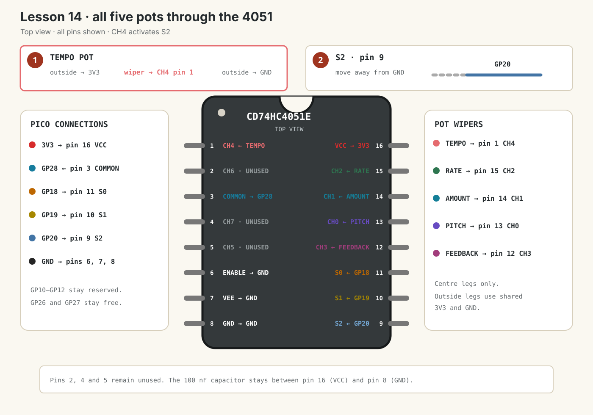

Dub Siren V3 · lesson 0014
Add Tempo on CH4
Add the fifth and final potentiometer, then activate S2 so the Pico can reach CH4.
1. CH4 needs the third selector bit
CH0–CH3 all begin with S2 = 0. CH4 is the first channel whose S2 bit is 1:
| S2 | S1 | S0 | Channel | Control |
|---|---|---|---|---|
| 0 | 0 | 0 | CH0 · pin 13 | Pitch |
| 0 | 0 | 1 | CH1 · pin 14 | Amount |
| 0 | 1 | 0 | CH2 · pin 15 | Rate |
| 0 | 1 | 1 | CH3 · pin 12 | Feedback |
| 1 | 0 | 0 | CH4 · pin 1 | Tempo |
CH4 is binary 100. S2 goes high; S1 and S0 go low. GP20 will now drive S2.
(channel >> 2) & 1.
Show answer
100 >> 2 = 001, then 001 & 001 = 001. S2 = 1.
2. Add Tempo with USB unplugged
Use the fifth purchased B10K linear potentiometer.
- Unplug the Pico’s USB cable.
- Connect one outside Tempo leg to shared 3V3.
- Connect the other outside Tempo leg to shared GND.
- Connect the Tempo centre wiper to 4051 CH4 pin 1.
- Move 4051 S2 pin 9 away from GND and connect it to
GP20. - Keep S0 pin 11 on GP18 and S1 pin 10 on GP19.
- Keep all other Lesson 13 wiring unchanged.

3. Add S2 and the fifth scan step
Run this main.py:
from machine import Pin
from picozero import Button, LED, Pot
from time import sleep_ms, ticks_add, ticks_diff, ticks_ms
led = LED(15)
button = Button(14)
mux_adc = Pot(28)
# Three selector bits can reach all eight 4051 channels.
mux_s0 = Pin(18, Pin.OUT)
mux_s1 = Pin(19, Pin.OUT)
mux_s2 = Pin(20, Pin.OUT)
PITCH_CHANNEL = 0
AMOUNT_CHANNEL = 1
RATE_CHANNEL = 2
FEEDBACK_CHANNEL = 3
TEMPO_CHANNEL = 4
MUX_SETTLE_MS = 2
CONTROL_SCAN_MS = 20
pitch_value = 0
amount_value = 0
rate_value = 0
feedback_value = 0
tempo_value = 0
last_pitch_hz = -1
last_amount = -1
last_rate = -1
last_feedback = -1
last_tempo_bpm = -1
last_change = ticks_ms()
light_on = False
next_control_scan = ticks_ms()
mux_waiting = False
mux_channel = PITCH_CHANNEL
mux_started = ticks_ms()
def select_mux_channel(channel):
# Extract the three binary bits for S0, S1 and S2.
mux_s0.value(channel & 1)
mux_s1.value((channel >> 1) & 1)
mux_s2.value((channel >> 2) & 1)
def start_mux_read(channel):
global mux_channel, mux_started, mux_waiting
mux_channel = channel
select_mux_channel(channel)
mux_started = ticks_ms()
mux_waiting = True
def finish_mux_read():
global amount_value, feedback_value, mux_waiting
global next_control_scan, pitch_value, rate_value, tempo_value
reading = mux_adc.value
if mux_channel == PITCH_CHANNEL:
pitch_value = reading
start_mux_read(AMOUNT_CHANNEL)
elif mux_channel == AMOUNT_CHANNEL:
amount_value = reading
start_mux_read(RATE_CHANNEL)
elif mux_channel == RATE_CHANNEL:
rate_value = reading
start_mux_read(FEEDBACK_CHANNEL)
elif mux_channel == FEEDBACK_CHANNEL:
feedback_value = reading
start_mux_read(TEMPO_CHANNEL)
else:
tempo_value = reading
mux_waiting = False
next_control_scan = ticks_add(ticks_ms(), CONTROL_SCAN_MS)
while True:
now = ticks_ms()
# Job 1: scan all five pots through GP28.
if not mux_waiting and ticks_diff(now, next_control_scan) >= 0:
start_mux_read(PITCH_CHANNEL)
if mux_waiting and ticks_diff(now, mux_started) >= MUX_SETTLE_MS:
finish_mux_read()
# Convert raw 0.0-1.0 values into useful prototype ranges.
pitch_hz = int(100 + pitch_value * 900)
tempo_bpm = int(40 + tempo_value * 160)
if (
abs(pitch_hz - last_pitch_hz) >= 5
or abs(amount_value - last_amount) >= 0.03
or abs(rate_value - last_rate) >= 0.03
or abs(feedback_value - last_feedback) >= 0.03
or abs(tempo_bpm - last_tempo_bpm) >= 2
):
print(
"Pitch:", pitch_hz, "Hz",
"Amount:", round(amount_value, 2),
"Rate:", round(rate_value, 2),
"Feedback:", round(feedback_value, 2),
"Tempo:", tempo_bpm, "BPM",
)
last_pitch_hz = pitch_hz
last_amount = amount_value
last_rate = rate_value
last_feedback = feedback_value
last_tempo_bpm = tempo_bpm
# Tempo and Feedback are only measured in this lesson.
# Rate controls LED speed; Amount controls LED brightness.
if button.is_pressed:
interval = int(500 - rate_value * 450)
if ticks_diff(now, last_change) >= interval:
light_on = not light_on
last_change = now
led.value = amount_value if light_on else 0
else:
led.off()
light_on = False
last_change = now
sleep_ms(1)The new S2 extraction
mux_s2.value((channel >> 2) & 1)Shift two positions so the S2 bit reaches the right edge, then mask it with 1. For channels 0–3 this produces 0; for channel 4 it produces 1.
The fifth scan step
After Feedback settles, the code starts Tempo. Only after Tempo is read does the complete five-control scan end.
Why the values are no longer smoothed
Earlier lessons used exponential smoothing because the Pitch value appeared to jump. You later found the real cause: a faulty cable. With reliable connections, pitch_value = reading gives an immediate response without smoothing delay.
The change thresholds around print() remain useful. They reduce repeated Shell output, but they do not alter the control values used by the instrument.
Rate still controls the modulation LED’s flash speed.
Tempo is currently only printed as a prototype 40–200 BPM value. Later it can control delay timing or a MIDI tempo-related parameter.
4. Test all five controls
- Reconnect USB and run the code.
- Turn Tempo clockwise. Only Tempo should rise from about 40 to 200 BPM.
- Turn Feedback. Only Feedback should move from about 0.00 to 1.00.
- Turn Pitch. Only Pitch should make a large frequency change.
- Hold Trigger: Amount changes brightness and Rate changes flash speed.
- Leave every control still. Values should remain stable apart from tiny ADC changes.
Tempo changes Feedback instead
Check Tempo’s centre wiper reaches CH4 pin 1. Recheck Feedback’s centre wiper remains on CH3 pin 12.
Tempo stays near 40 BPM
First check S2 pin 9 reaches GP20. Then unplug USB and reseat all three Tempo wires.
Older controls stopped working
Check S2 was moved to GP20—not S1 or S0. Recheck S0 pin 11 to GP18 and S1 pin 10 to GP19.
Done means
- All five potentiometers share GP28.
- Tempo’s centre wiper reaches CH4 pin 1.
- GP18, GP19 and GP20 drive S0, S1 and S2.
- You know CH4 selects binary 100.
- All five controls remain independent.
- GP10–GP12 remain free.
Tell your teaching agent: whether Tempo reaches roughly 40–200 BPM clockwise, and whether all five controls remain independent.